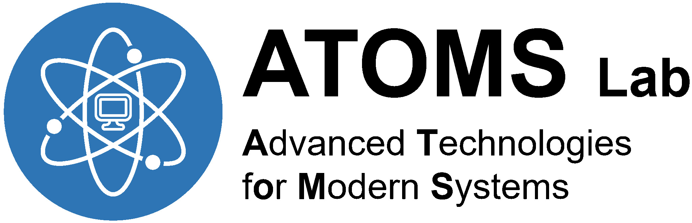

The Advanced Technologies for Modern Systems (ATOMS) lab in HKU CS, led by Zuming Jiang, is dedicated to tackle fundamental and difficult problems (e.g., security, functionality, and interpretability) in modern computer systems (e.g., operating systems, databases, AI systems) via principal and practical solutions.